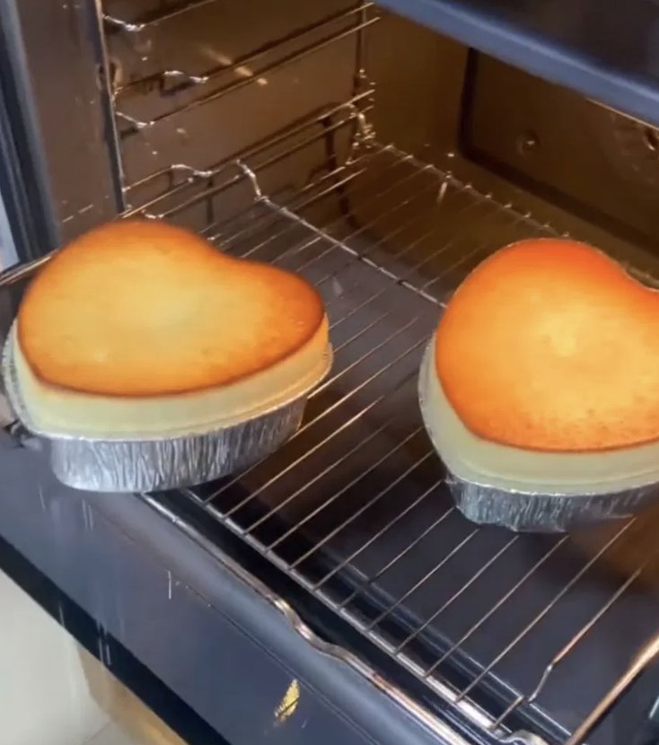

Pink Ladybug Strawberry Swirl Cheesecake
A creamy baked cheesecake with a pink strawberry swirl, topped with strawberry "ladybugs".
Time: 40 min prep, 65 min baking, 1 hour cooling in the oven, at least 6 hours chilling
Ingredients
Crust
- 200 g Petit Beurre biscuits (פתי בר) or graham crackers
- 2 tbsp (25 g) sugar
- a pinch of salt
- 90 g (6 tbsp) unsalted butter, melted
Strawberry swirl
- 250 g (about 2 cups) strawberries, hulled and chopped
- 2 tbsp (25 g) sugar
- 1 tsp lemon juice
Filling (everything at room temperature)
- 900 g full-fat block cream cheese
- 200 g (1 cup) sugar
- 2 tbsp (16 g) cornstarch
- 1 tsp vanilla extract
- zest of half a lemon
- 240 g (1 cup) sour cream
- 4 large eggs
Ladybug topping (optional)
- 8–10 strawberries
- 30 g dark chocolate, melted
- 8–10 chocolate chips or blueberries
Steps
- Make the swirl. Cook the strawberries, sugar and lemon juice in a small pan over medium heat, stirring often, for 8–10 minutes, until soft and jammy. Blend until smooth and let it cool completely.
- Make the crust. Heat the oven to 175°C (350°F) and grease the pan. Crush the biscuits into fine crumbs, then mix in the sugar, salt and melted butter until it looks like wet sand. Press it firmly into the bottom of the pan and bake for 10 minutes. Let it cool, and lower the oven to 160°C (325°F).
- Wrap the pan. Wrap the outside of the pan in two layers of wide foil, so the water bath can't leak in.
- Make the filling. Beat the cream cheese and sugar on low to medium speed for about 3 minutes, until completely smooth, scraping down the bowl. Beat in the cornstarch, vanilla, lemon zest and sour cream. Add the eggs one at a time on low speed, mixing only until each one disappears. Beating in too much air is what makes cheesecakes crack.
- Swirl. Pour the filling over the crust. Drop spoonfuls of the strawberry sauce on top and drag a knife through it in loose figure-eights. Stop while the swirls are still clearly pink and white.
- Bake in a water bath. Set the pan inside a large roasting pan and pour in hot water to about 2–3 cm up the sides. Bake for 60–70 minutes, until the edges are set but the centre still wobbles like jelly when you nudge the pan.
- Cool slowly. Turn the oven off, prop the door open a crack, and leave the cheesecake inside for 1 hour. Then take it out of the water, run a thin knife around the edge, and let it reach room temperature.
- Chill. Refrigerate for at least 6 hours, ideally overnight.
- Add the ladybugs. Halve the strawberries lengthwise, pat them dry and set them cut side down on top. With a toothpick, dot on melted-chocolate spots and draw a line down the middle of each one. Add a chocolate chip or blueberry at the wide end as the head.
Tips
- Room-temperature cream cheese and eggs are the secret to a smooth filling with no lumps.
- For clean slices, dip a knife in hot water and wipe it dry between cuts.
- Keeps for up to 5 days in the fridge. Add the ladybugs on the day you serve it.